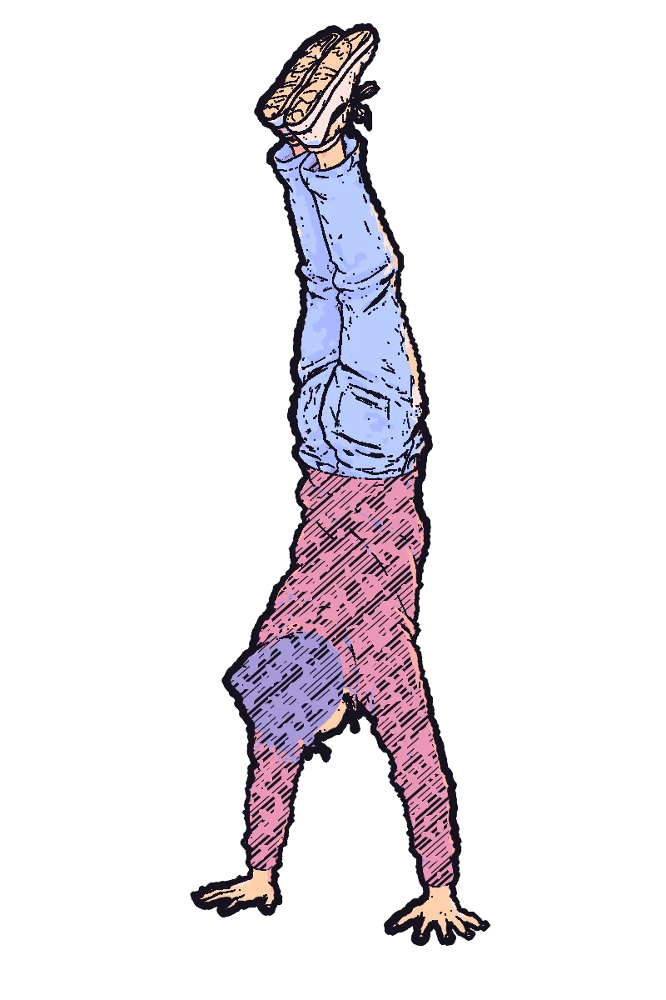
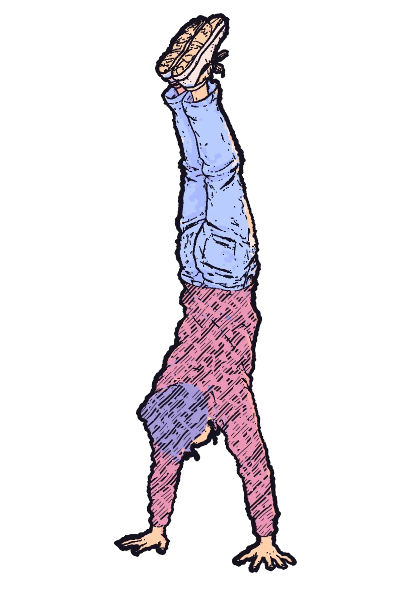
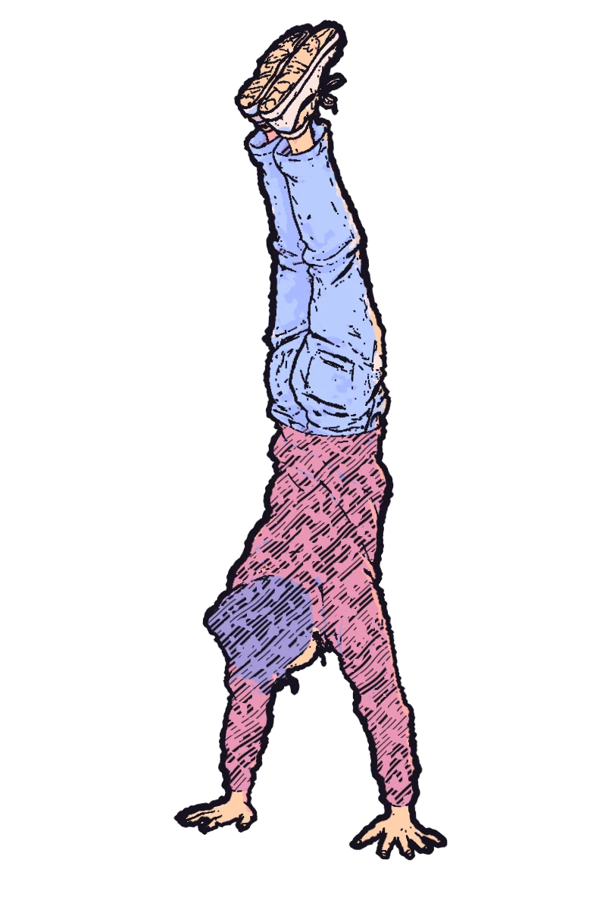
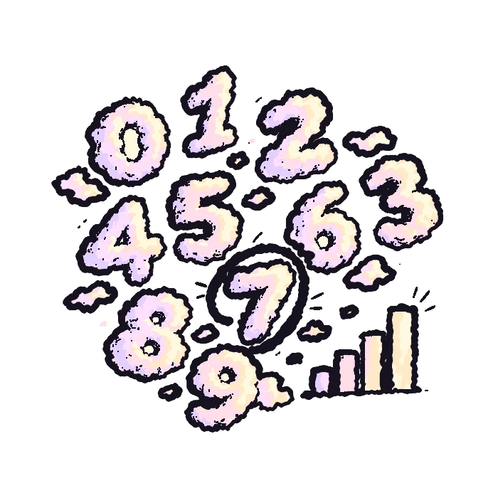
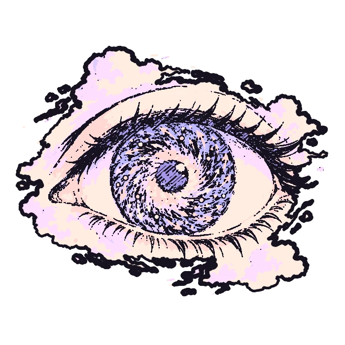
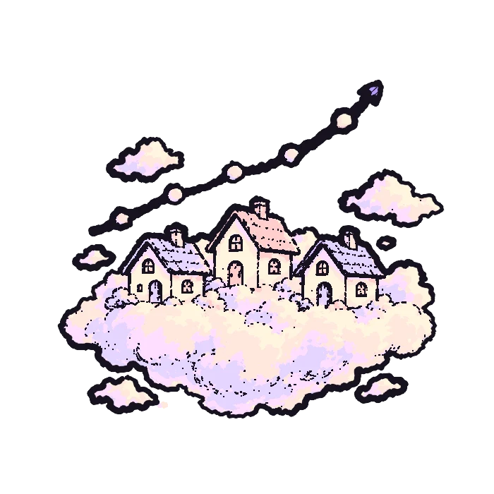
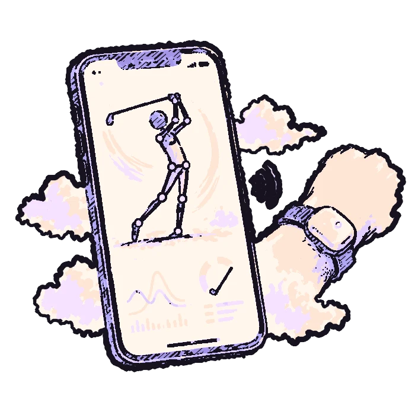
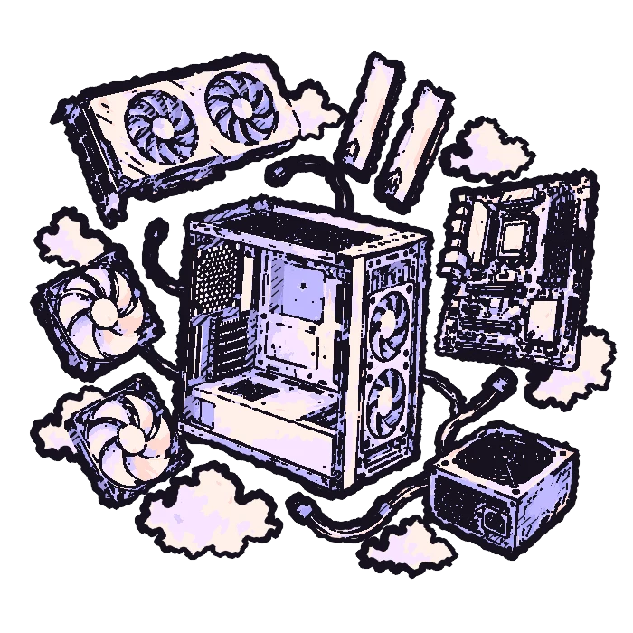
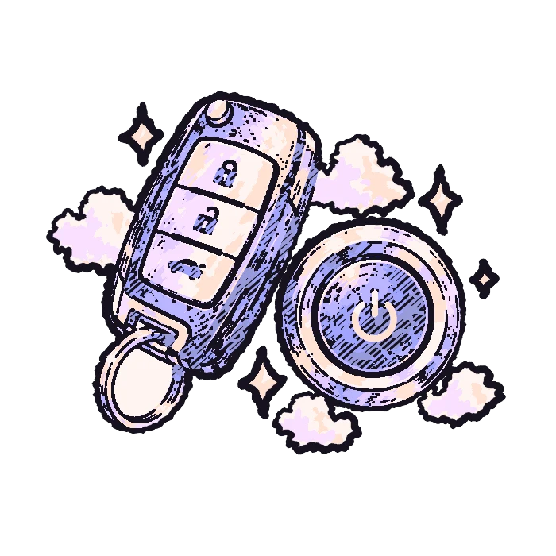

Daniel Azran
engineer · machine learning · video editor
scroll
down ↓
down ↓
ch. 1 — the guy who edits his own code

The work
this is my actual swing, run through pose tracking!
Golf Swing Analyzer
tempo
back
down
hand speed

Optical Flow Tracker
30+ FPS Lucas–Kanade tracking.
it's a 7!
Digit Classifier
Keras CNN · 98% on MNIST.

Real Estate Predictor
−7% RMSE · log-price.
Experience
2014–2020 · video editor. COD edits, compositing, camera tracking, leading 4 editors.

Backend dev · Extropian
2024–25 · golf app, Bluetooth + metrics

Systems & IT
2018–now · builds, networks, VMs

Lockout tech
2022–23 · push-to-start keys
I'm a full-stack engineer focused on ML and data science, but what I really enjoy is solving problems. Editing taught me the viewer's side matters as much as what's behind it.